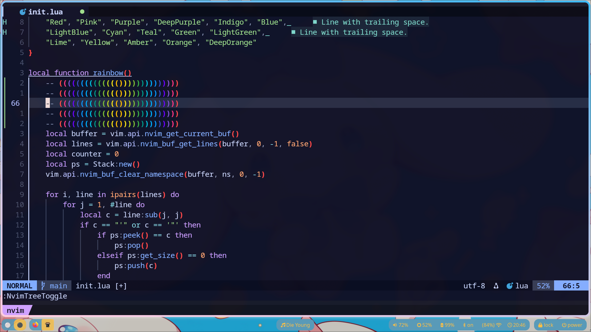

A lightweight Lua plugin for Neovim that mimics the built-in 'rainbow parentheses' feature from VSCode. This plugin provides colorful, intuitive parenthesis highlighting for better readability and is fully compatible with package managers like Lazy.
require('lazy').setup({
'TinyBoxSwe/rainbow',
config = function()
require('rainbow').setup()
end
})
Once installed, the plugin will automatically highlight matching parentheses, brackets, and quotes in rainbow colors whenever you enter or modify a buffer. Additionally you can set a custom rainbow withing the setup function:
require('rainbow').setup({
colour_map = {
{ name = "Red", fg = "#FF5252", bold = true }, -- Material Red
{ name = "Pink", fg = "#FF4081", bold = true }, -- Material Pink
{ name = "Purple", fg = "#7E57C2", bold = true }, -- Material Purple
{ name = "DeepPurple", fg = "#6200EA", bold = true }, -- Material Deep Purple
{ name = "Indigo", fg = "#3F51B5", bold = true }, -- Material Indigo
{ name = "Blue", fg = "#2196F3", bold = true }, -- Material Blue
{ name = "LightBlue", fg = "#03A9F4", bold = true }, -- Material Light Blue
{ name = "Cyan", fg = "#00BCD4", bold = true }, -- Material Cyan
{ name = "Teal", fg = "#009688", bold = true }, -- Material Teal
{ name = "Green", fg = "#4CAF50", bold = true }, -- Material Green
{ name = "LightGreen", fg = "#8BC34A", bold = true }, -- Material Light Green
{ name = "Lime", fg = "#CDDC39", bold = true }, -- Material Lime
{ name = "Yellow", fg = "#FFEB3B", bold = true }, -- Material Yellow
{ name = "Amber", fg = "#FFC107", bold = true }, -- Material Amber
{ name = "Orange", fg = "#FF9800", bold = true }, -- Material Orange
{ name = "DeepOrange", fg = "#FF5722", bold = true }, -- Material Deep Orange
}
})
local Stack = {}
function Stack.new()
return setmetatable({ items = {}, size = 0 }, { __index = Stack })
end
function Stack:push(item)
self.size = self.size + 1
table.insert(self.items, item)
end
function Stack:get_size()
return self.size
end
function Stack:pop()
if self.size <= 0 then
error("Size of the stack is already at the lowest allowed size!")
end
local item = self.items[self.size]
self.items[self.size] = nil
self.size = self.size - 1
return item
end
function Stack:peek()
if self.size == 0 then
return nil
end
return self.items[self.size]
end

🔗 View The Project On GitHub: Rainbow Parentheses